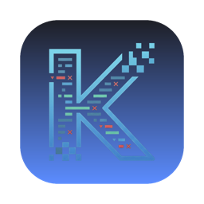

Android 앱에 붙어 로그·네트워크·상태를 실시간으로 들여다보는 macOS 데스크톱 디버깅 도구.
macOS 다운로드 릴리스 페이지에서 최신 .dmg를 받아 실행 · 설치 후 자동 업데이트Chrome DevTools Protocol(CDP)로 앱 안 WebView를 직접 디버깅한다.
adb로 연결된 기기를 자동 감지하고 세션을 유지한다.
새 버전이 나오면 앱 안에서 클릭 한 번으로 받아 교체·재시작한다.
디바이스 로그를 스트리밍으로 모아 필터링해서 본다.
앱이 주고받는 요청·응답을 들여다본다.
Preferences·DB 등 앱 내부 상태 조회 및 SQL 실행.
다운로드 — 위 버튼으로 최신 .dmg를 받아 Applications로 드래그한다.
실행 — 서명 전 단계라 첫 실행은 앱을 우클릭 → 열기.
업데이트 — 새 버전이 있으면 ⚙ 설정 버튼에 뱃지가 뜨고, 설정 안 업데이트를 누르면 자동으로 교체·재시작된다.